Ambattur, Chennai · ISO 9001:2015
Metal, the way
you want it to be.
Heat treatment rewrites the crystal structure of the steel itself, so a component comes back harder, tougher or softer all the way through. We treat to the hardness your drawing asks for, and every batch leaves here with a report that says so.
The scale we work on
Every degree is a different metal.
Below about 400°C steel does not glow — the colour you see is the oxide film, which is how toolmakers have judged tempering by eye for two centuries. Above it, the metal is incandescent. Drag through the range.
Austenitising & hardening
What we do
The process of transformation.
Eight processes cover almost everything that comes through the door, for ferrous and non-ferrous metals alike, all of it to ASTM standards. If your drawing calls for something else, or does not specify at all, send it over — working out the right treatment is part of the job.

Hardening & Tempering
The core process. Heat into the austenitic range, quench, then temper back to the hardness the part actually needs.
- Temperature
- 820–870°C, tempered 150–600°C
- Result
- 25–62 HRC depending on grade and temper

Case Hardening & Tempering
A hard, wear-resistant skin over a core that stays tough. The standard treatment for gears and transmission parts.
- Temperature
- 900–930°C
- Result
- 58–62 HRC case, 0.2–1.5 mm effective depth

Annealing
Softening. Taking work-hardened or previously treated material back to a machinable, stress-free state.
- Temperature
- 650–900°C, slow cooled
- Result
- Softened, uniform, ready to machine or form

Normalising & Tempering
Grain refinement after forging or casting. The step that makes everything downstream predictable.
- Temperature
- 870–950°C, air cooled
- Result
- Uniform fine grain, improved machinability

Stress Relieving
Taking the locked-in stress out of welded and machined parts, before it takes your tolerances out.
- Temperature
- 550–650°C
- Result
- Dimensional stability, hardness unchanged

Solution Annealing
Dissolving carbides back into solution, so stainless comes back to full corrosion resistance.
- Temperature
- 950–1150°C, rapid cooled
- Result
- Soft, homogeneous, corrosion resistance restored
Proof
Heat treatment is invisible. So we measure it.
Heat treatment is invisible from the outside. A correctly hardened part and a badly hardened one look identical right up until one of them fails in service. Everything below is how we show you which one you are getting, on every batch.
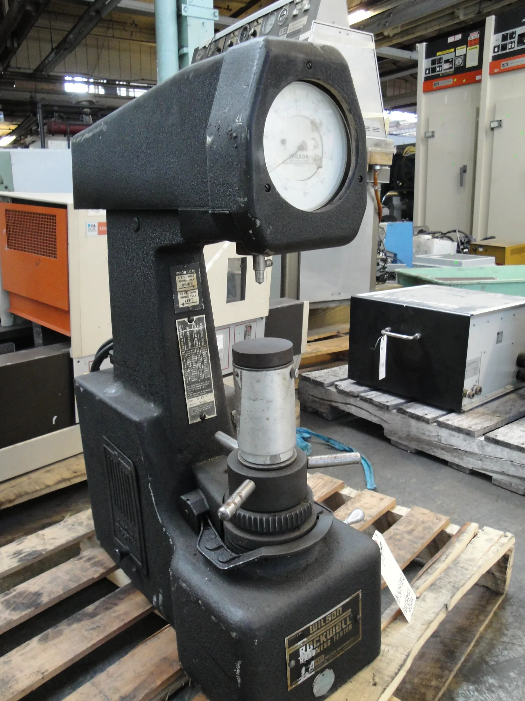
Rockwell & Brinell hardness
Rockwell, optical Brinell-cum-Rockwell and Brinell testers in house, reading at the points your drawing specifies. The number goes on the report that travels with the parts.
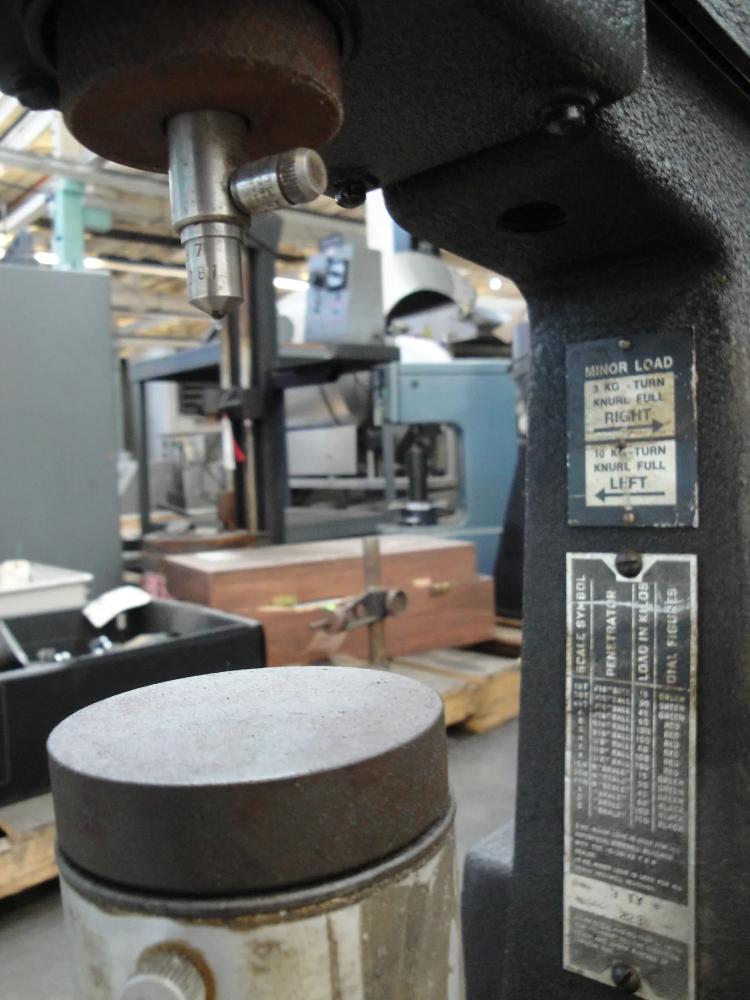
Portable hardness testing
A portable tester reaches large fabrications, bogie-load work and finished assemblies that will never fit under a bench machine, so big parts get the same proof as small ones.
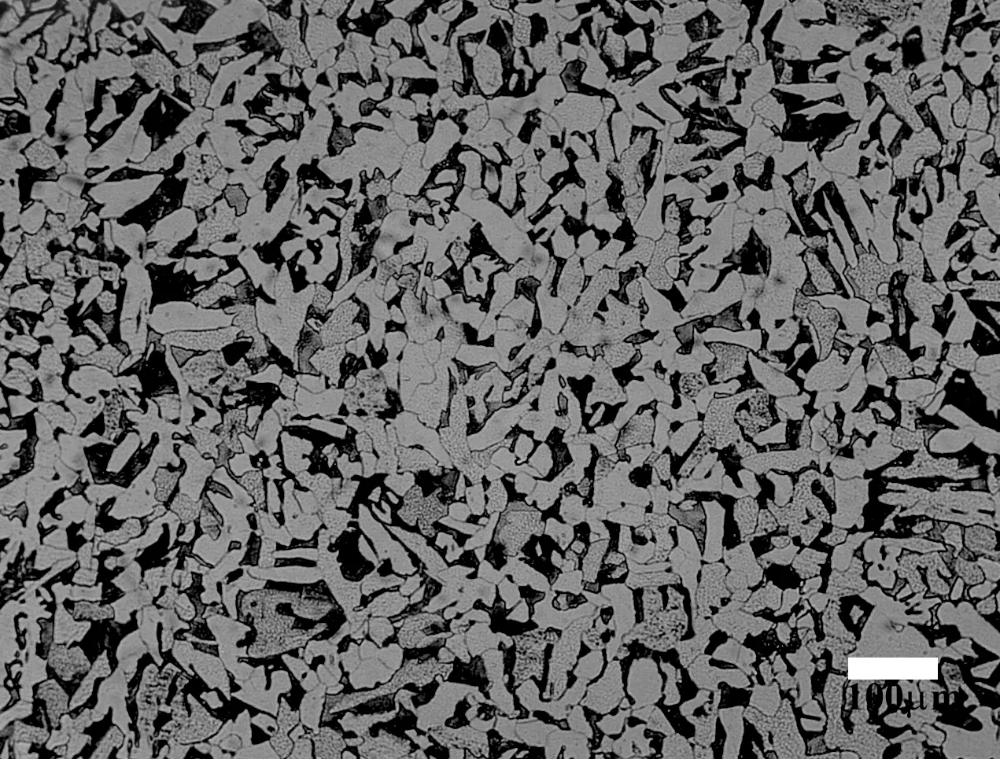
Microstructure at 500×
Cut on the abrasive saw, mounted, polished on the twin-disc grinder, etched and examined at up to 500×. Confirms the structure the process was meant to produce, and catches retained austenite, decarburisation and grain growth.

Furnace control & power backup
Automated furnace control with temperature uniformity surveys and instrument calibration on schedule, backed by 24×7 diesel generators so a long carburising cycle finishes exactly as it started.
Microstructure
The evidence is in the grain.
Etched cross-sections under the microscope at up to 500× — a direct look at what the process did to the metal.


Who we work with
Most of what we treat ends up inside something that moves.
Chennai is an engineering city, and most of what we treat ends up inside something that moves, holds pressure or carries load. Batch sizes run from a single prototype to steady production quantities.
Valves & flow control
Stems, discs, seats and trim for valve makers, including martensitic and PH stainless grades.
Power & heavy engineering
Large fabrications and forged components, stress relieved and normalised on the bogie hearth.
Construction equipment
Pins, bushes, levers and linkages built to take shock and abrasion on site.
Automotive components
Gears, shafts, pins and linkages for the tier-one and tier-two supply base around Chennai.
Gallery
Inside the works
The furnaces, the cranes and the laboratory, photographed on the floor at Nazarathpettai.
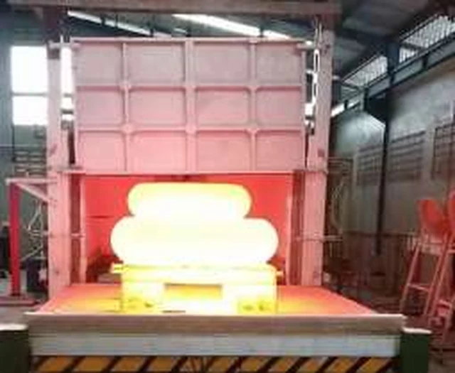
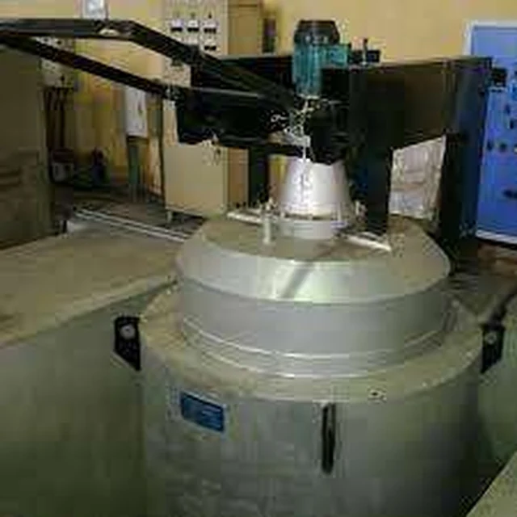
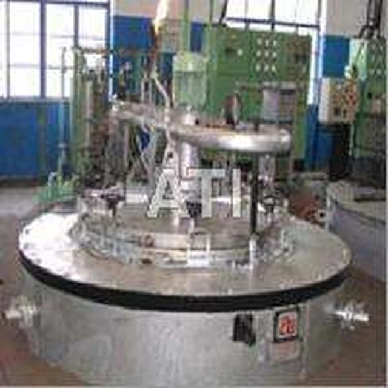
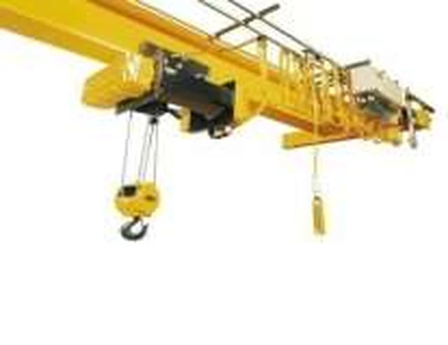
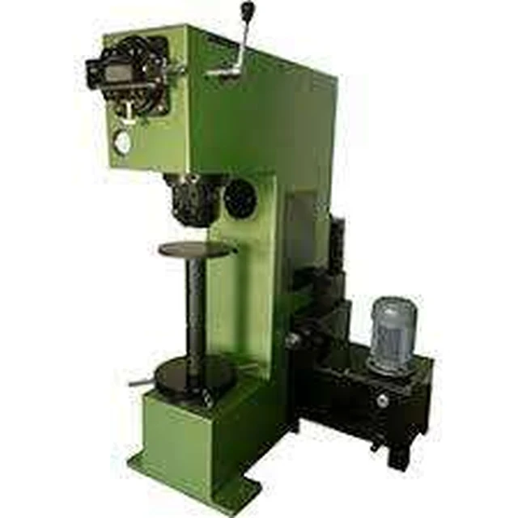
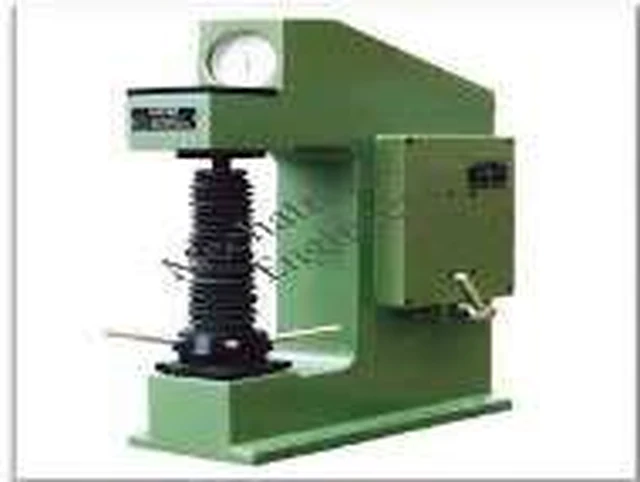
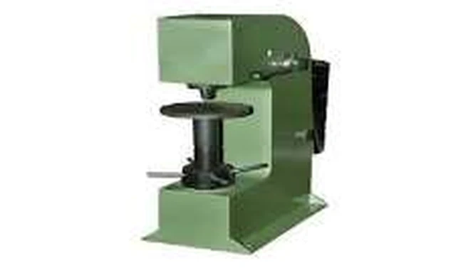
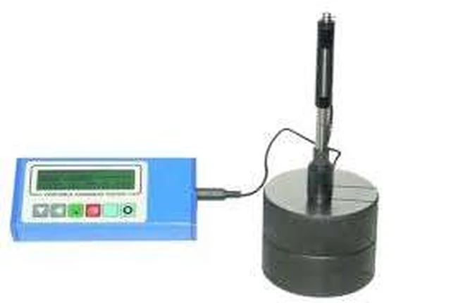
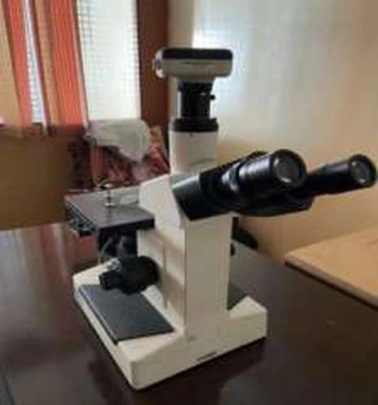
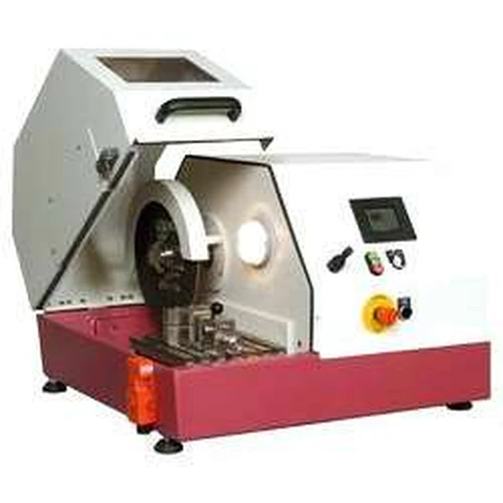
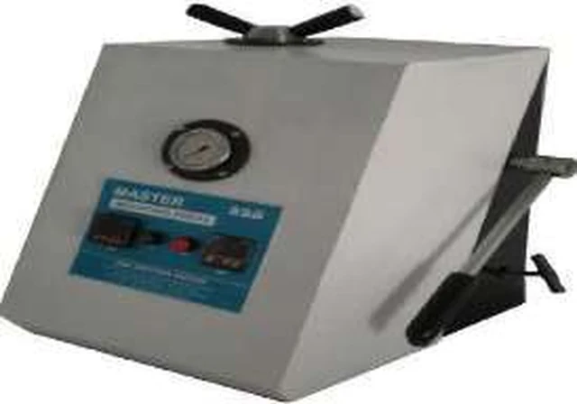
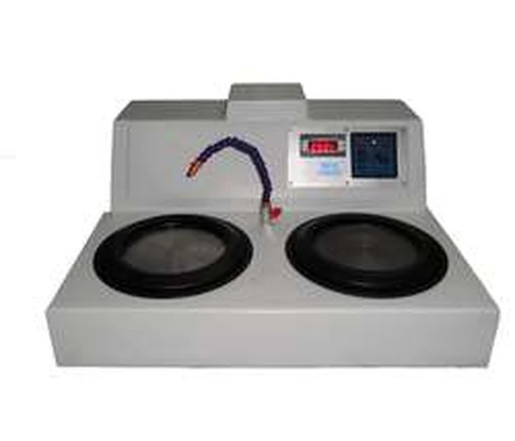
Customers
Who our parts go back to
Over a hundred manufacturers send us work, from single prototypes to steady production. A few of the names our parts go back to:
- L&T Valves Limited
- Flowserve India Control Pvt Ltd
- Schwing Stetter Pvt Ltd
- Severn Glocon India Pvt Ltd
- Bharat Heavy Electricals Ltd
Excellent workmanship and timely delivery. Their heat treatment quality has consistently exceeded our expectations.
Adhithi MeenakshiCustomer
Reliable service, skilled team, and outstanding results. We trust Ambattur Metal Treat for all our heat treatment requirements.
HariHaran RathinakumarCustomer
Ambattur Metal Treat is the best heat treatment company in Chennai. Excellent quality and on-time delivery.
G. MathiCustomer
Get a quote
Send us the grade and the hardness.
Or just describe the problem — specifying the treatment is part of the job.